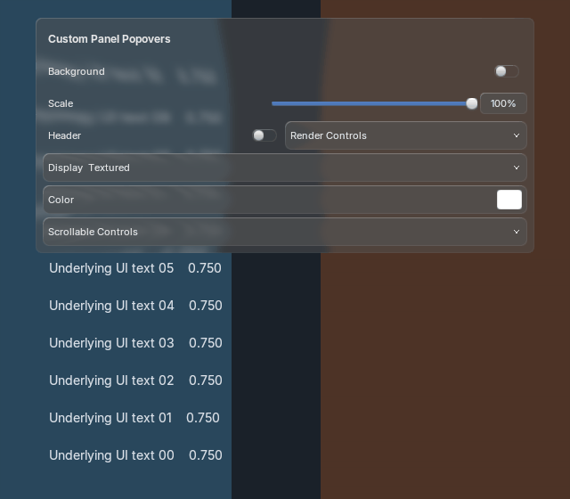
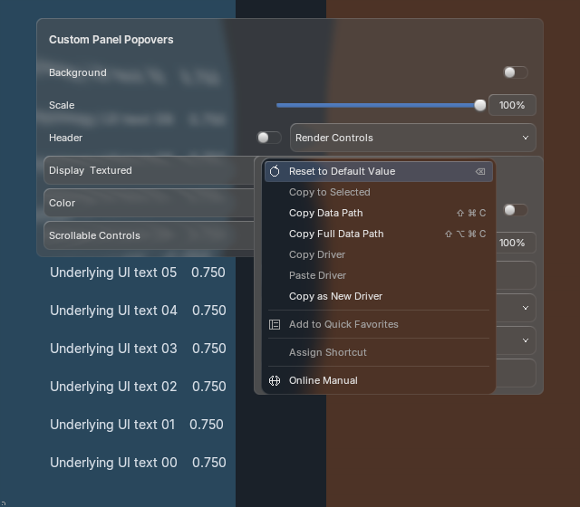
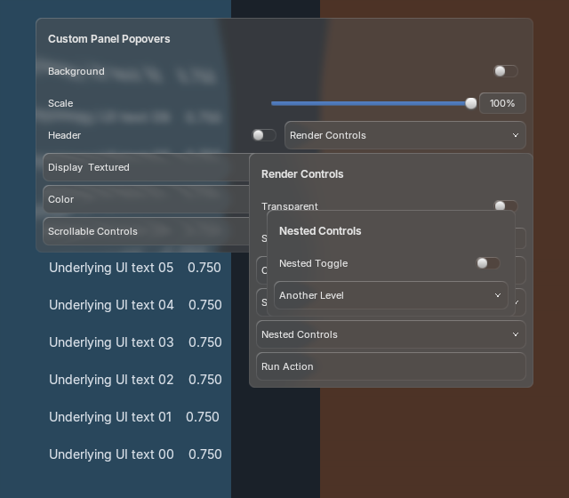
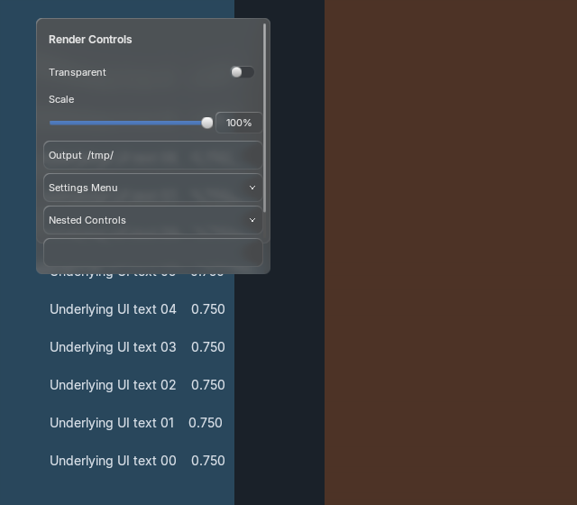
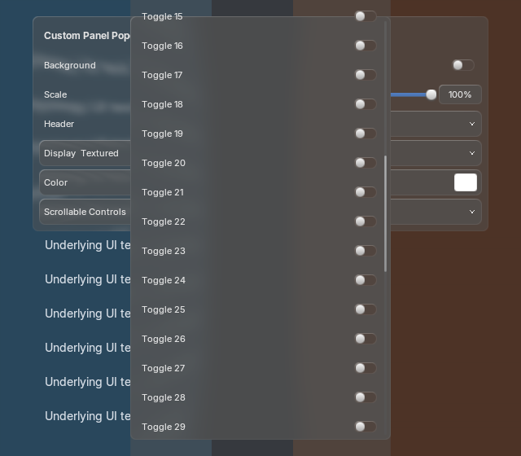
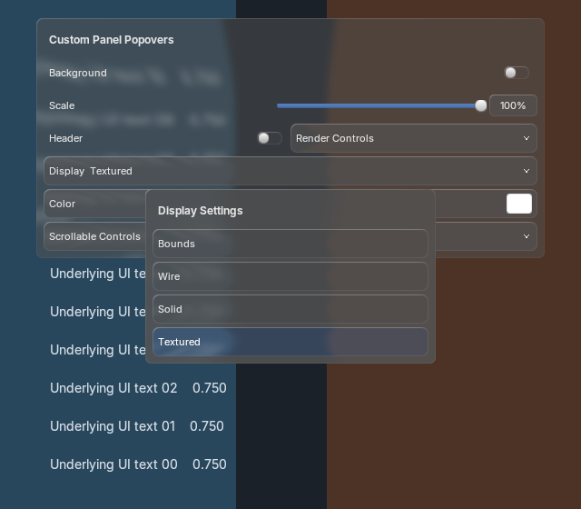
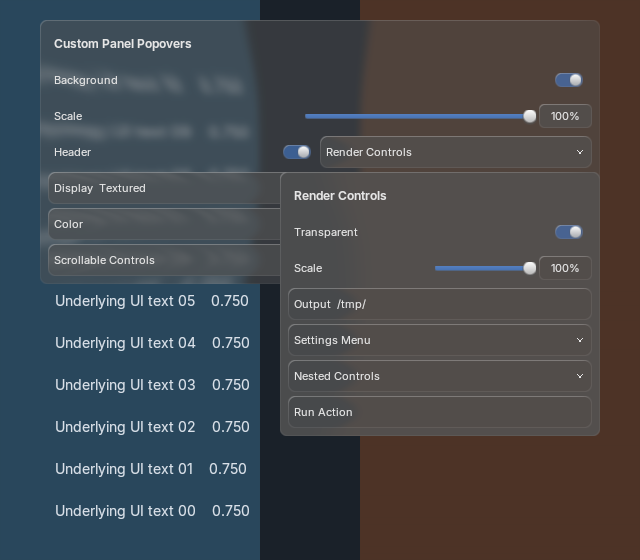

Panel openers beside ordinary fields

Actual production Blender rendering with active-theme colors, shared BVT glass and motion. These controls remain partial; exact generated-reference acceptance is open. No new generated reference is claimed for this composition. Tyler owns visual QA.
Behavior and remaining gaps · Measured comparisons · Source audit

All 360 sampled frames match with native text batching enabled and disabled. One retained backdrop and one strong blur revision; no panel draw or poll callbacks during paint.
5.2.2 at 1× · 5.2.2 at 1.5× · 5.2.2 at 2× · 5.1.2 at 1× · 5.1.2 at 1.5× · 5.1.2 at 2×












